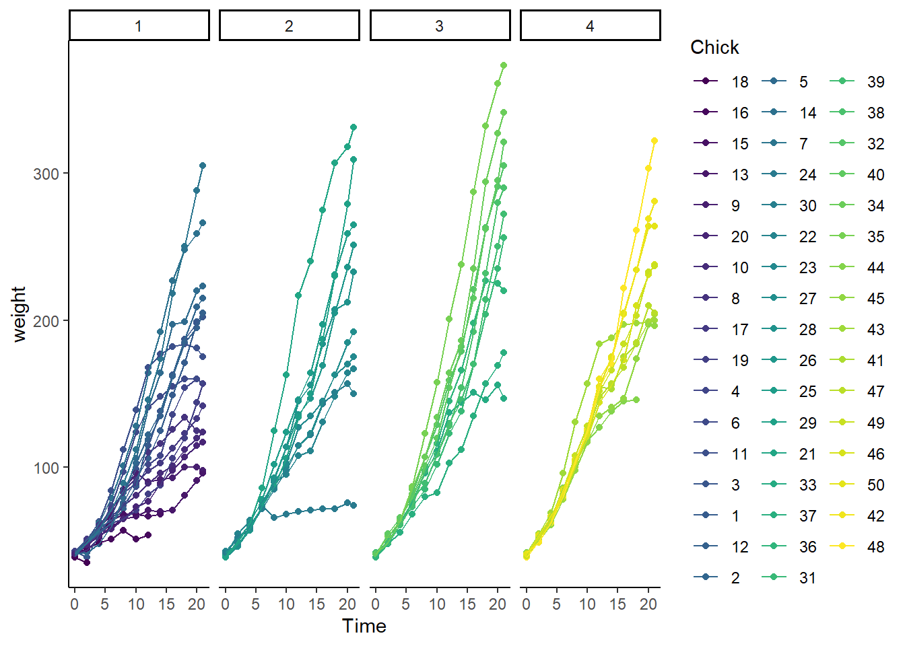

Chapter 31 Two-way ANOVA RM/CR
Two-way ANOVA experiments allow for simultaneously testing the effects of two predictor variables.
In a two way completely randomized ANOVA, all of the levels of both factors are randomly allocated to individual experimental units. Each experimental unit represents an independent replicate and each generates a single measurement for analysis.
In a two-way related/repeated measures ANOVA, all of the levels for both factors are measured within a single experimental unit. The experimental unit represents the independent replicate, and therefore the data set contains many intrinsically-related measurements from each replicate.
A hybrid of the two above is called a two-way mixed ANOVA experimental design. In a mixed ANOVA, one factor is completely randomized, whereas the other is structured as a related/repeated measures within each replicate.
The ChickWeight study is a good example for visualizing how a two-way mixed ANOVA would operate.
31.1 ChickWeight Data set
The ChickWeight dataset in base R is from a study testing the effect of 4 diets on the growth of chicks. You can learn more about it by typing ?ChickWeight in the console.
As you might imagine, the principal goal of a study like this is to determine if any of the 4 diets differ from each other in terms of how they impact chick weight over time.
This is a two way mixed ANOVA design. The two factors are diet and time. Chicks are randomly assigned to a diet. While on the diet each chick is weighed repeatedly at various time points.
Therefore, Diet is a completely randomized (CR) factor, whereas the factor time (in units of days) is a related/repeated measure variable.
If that’s not entirely clear, it should become more obvious by looking at a plot of the data.
31.2 Munge ChickWeight data
We have several things to do before running ANOVA. First, let’s just look at the data graphically. That makes the study design a bit easier to understand.
Then we’ll clean it up for what we need to do.
Step 1: Plot it for a quick visualization
Note how each point-to-point line represents a unique chick replicate. You can get a sense from this visual how weight correlates with the replicates by time. Heavier chicks are heavy throughout the time course, lighter chicks are lighter throughout the time course. This serves as an interesting visualization of biological variation.
Visually, can you tell if any of the diets differ from the others?
ggplot(ChickWeight,
aes(Time,
weight,
group=Chick,
color=Chick)
) +
geom_point(
) +
geom_line(
) +
scale_color_viridis_d(
) +
theme_classic(
) +
facet_grid(
~Diet) 
Step 2: First, check for missing data on the within factor, chicks.
We can’t have any for a RM design. ezDesign is a slick function in the ez package with which to check for missing values:
ezDesign(
data = ChickWeight,
x = .(Time),
y = .(Chick),
row = NULL,
col = NULL,
cell_border_size = 1
) Step 3: Remove Chicks for which full Time series is missing, while creating a repaired dataset.
Here’s a hemi dplyr-based way to do that:
temp <- as.data.frame(
ChickWeight%>%
group_by(Chick)%>%
tally()
)
# show only the Chick replicates that have incomplete measures on time
temp[temp$n<12, ]## Chick n
## 1 18 2
## 2 16 7
## 3 15 8
## 8 8 11
## 41 44 10# create new dataframe for ANOVA analysis in which the incomplete replicates are removed
ChickWeight1 <- ChickWeight[!(ChickWeight$Chick %in% temp$Chick[temp$n<12]),]Step 4: Check to make sure the new dataframe from the previous step is clean, that incomplete replicates are out
ezDesign(
data = ChickWeight1
, x = .(Time)
, y = .(Chick)
, row = NULL
, col = NULL
, cell_border_size = 1
)
Step 5: The ChickWeight dataframe has Time as a numeric, which needs to be converted to a factor to get stuff to work.
One last check of the data structure:
## Grouped Data: weight ~ Time | Chick
## weight Time Chick Diet
## 1 42 0 1 1
## 2 51 2 1 1
## 3 59 4 1 1
## 4 64 6 1 1
## 5 76 8 1 1
## 6 93 10 1 1## Classes 'nfnGroupedData', 'nfGroupedData', 'groupedData' and 'data.frame': 540 obs. of 4 variables:
## $ weight: num 42 51 59 64 76 93 106 125 149 171 ...
## $ Time : Factor w/ 12 levels "0","2","4","6",..: 1 2 3 4 5 6 7 8 9 10 ...
## $ Chick : Ord.factor w/ 45 levels "13"<"9"<"20"<..: 11 11 11 11 11 11 11 11 11 11 ...
## $ Diet : Factor w/ 4 levels "1","2","3","4": 1 1 1 1 1 1 1 1 1 1 ...
## - attr(*, "formula")=Class 'formula' language weight ~ Time | Chick
## .. ..- attr(*, ".Environment")=<environment: R_EmptyEnv>
## - attr(*, "labels")=List of 2
## ..$ x: chr "Time"
## ..$ y: chr "Body weight"
## - attr(*, "units")=List of 2
## ..$ x: chr "(days)"
## ..$ y: chr "(gm)"
## - attr(*, "outer")=Class 'formula' language ~Diet
## .. ..- attr(*, ".Environment")=<environment: R_EmptyEnv>
## - attr(*, "FUN")=function (x)
## - attr(*, "order.groups")= logi TRUEDone with the munge! Woot!
31.3 The test
The main scientific objective of this study is to learn whether growth differs between the four diets.
The study design calls for a two-way mixed ANOVA analysis as an omnibus test. If that passes, we’ll have access to compare the diets post-hoc.
We’re not particularly interested in the effect of the Time factor, per se. We know the chicks will grow with time. In one sense, Time is something of a nuisance factor. Nor are we particularly interested in the interaction effect between Time and Diet. Which is to say that we don’t want to know at what times the various levels of the diets differ.
We just want to know if the diets differ. So the experiment, although pretty, is a bit over-designed.
Having said that, the repeated measures of weight on time seems, intuitively, a solid way for designing the experiment, compared to a few conceivable alternatives.
It collects 12 different weights per replicate. That seems better than a study that only weighs each critter once, say, on the 21st day. Thus, there is more thorough information on how each replicate responded to the diet. Which seems useful at some level. ANOVA will not allow us to extract that utility, unfortunately.
But we’re not explicitly applying a rate model to the data to derive growth rate constants that might be compared. The growth rate is more implicit…it’s the information buried within the repeated measures.
We just want to know if the four diets differ from each other. The Diet variable is completely randomized. Every weight measurement for a chick on diet 1 is independent of every measurement for a chick on diet 2, and so on. No chick is receiving all four diets, yet every chick is receiving all timed measurements.
To encode a two-way mixed ANOVA using ezANOVA, simply configure the arguments such that the repeated measure factor is within and the completely randomized factor is between. An object named two_wayMM, which could have been named foo, is used to store the ANOVA output.
two_wayMM <- ezANOVA(data = ChickWeight1,
dv = weight,
wid = Chick,
between = Diet,
within = Time,
type = 3,
detailed = T,
return_aov=F
)
two_wayMM## $ANOVA
## Effect DFn DFd SSn SSd F p p<.05
## 1 (Intercept) 1 41 8404690.44 313495.0 1099.195477 3.122264e-31 *
## 2 Diet 3 41 116403.57 313495.0 5.074559 4.428259e-03 *
## 3 Time 11 451 2023644.28 295322.5 280.945086 6.411563e-194 *
## 4 Diet:Time 33 451 81375.09 295322.5 3.765802 9.341051e-11 *
## ges
## 1 0.9324550
## 2 0.1605077
## 3 0.7687269
## 4 0.1179020
##
## $`Mauchly's Test for Sphericity`
## Effect W p p<.05
## 3 Time 2.67541e-17 1.032609e-251 *
## 4 Diet:Time 2.67541e-17 1.032609e-251 *
##
## $`Sphericity Corrections`
## Effect GGe p[GG] p[GG]<.05 HFe p[HF] p[HF]<.05
## 3 Time 0.114145 2.005482e-24 * 0.1160483 8.633944e-25 *
## 4 Diet:Time 0.114145 1.045740e-02 * 0.1160483 1.001674e-02 *31.4 Interpreting the ANOVA output
Here ezANOVA creates Four objects: * $ANOVA * $Mauchly’s Test for Sphericity * $Sphericity Corrections` * $aov (not called)
31.4.1 $ANOVA: The ANOVA table
Before partitioning for subjects, the total residual sums of squares in the sample would be the sum of the residual error terms, or \(295322.5 + 313495.0 = 608817.5\).
Because weight measurements were repeated on each chick over time, this procedure allows us to account for some of the variation in the Time variable as that due to variation among the chicks.
Pulling 313495 out from the overall residual provides a new (and lower than otherwise) residual term for the effect of Diet, while lowering the residual term for the effect of Time and the interaction.
The plot above gives you a sense of what’s going on. What’s really noticeable, I think, is a lot of chick-to-chick variation, irrespective of the diet. There’s also a lot of variation across the time frame. But the chick-to-chick variation grows really prominent near the end of the time course.
What this does is help to isolate from the variation over the time course that which is due to the differences between the 45 chicks. It doesn’t explain why that variation between the chicks occurs, its obviously biological, but it does allow us to partition it out from the Time effect.
In the ANOVA table the intercept effect is not particularly important except for the SSd, which tabulates the SS that have been partitioned to the chicks. It is the subject effect. You can think of it as the average subject effect. An extreme value means that there is substantial variation within the chick replicates. Of course there is, they’re growing up!
The second effect is Diet, which is important for all the reasons above. There are four diets and thus 3 degrees of freedom for the F test numerator. There are 45 chicks serving as replicates spread out into the four diet groups. The four diet group means cost a total of 4 degrees of freedom, leaving 41 degrees of freedom for the Diet residual variance (denominator). F has been calculated as \[F=\frac{\frac{SSn}{df_n}}{\frac{SSd}{df_d}}\]
The p-value is the probability of getting an F value as or more extreme from the null F(3,41) distribution. Given the p-value is less than a type 1 error threshold of 5%, we can reject that the F test statistic obtained in the sample belongs to the null.
Normally we would conclude that this means the diets effect on weight differs. But that’s hard to call to make given the interaction effect is also positive.
The general eta-squared (ges) value indicates that 16% of the overall variation is attributable to the Diet effect.
The second effect is that for the twelve levels of the variable Time. The interpretation of it’s table is much the same. There are seven time points per replicate, and one is lost to calculate the grand time mean, leaving 11 df for this test. The residual \(df_d=(45-1)*(12-1)-(12-1)*(4-1)=451\). Almost 77% of the total variation in the sample can be explained the effect of time. Although a large effect, it isn’t very interesting scientifically. There’s no surprise that the chicks grew a lot!
The third effect is the interaction between the Diet and Time variables. \(df_n=(4-1)*(12-1)=33\). The interaction between these two variables explains about 11.8% of the total variation in the sample. This suggests the various diets have some differential influence on the growth rates. It isn’t just the diets, and it isn’t just the time; the two factors together combine to change weights in a way that neither does alone.
31.4.2 Mauchly’s Test and Corrections
You’ll recall one of the assumptions to be met for valid ANOVA analysis is that the response variances of the different levels of a factor should be about equivalent (homoskedasticity). This concept extends to the related measures scenarios.
Sphericity is defined as uniform variance for the differences between factor levels. Sphericity is an assumption of RM ANOVA, and if violated, should be corrected.
Quick inspection of the time course shows violation. Focus on the connecting lines. They have far greater slope near the end of the time course compared to early stages.
Mauchly’s test, with its extreme F-statistic value, indicates we can reject the null that sphericity is present. There are differences in variance of differences across the time scale. The Df’s for this test are DfnGGe & DfdGGe.
Because of that, we correct the Time result for sphericity using the Geiser-Greenhouse correction. We do this by using the value of p[GG] as a p-value for our test. The correction is dramatic, at least with respect to the p-value correction for the interaction effect. The p[GG]= 0.01045 for the interaction test is that which should be used for inference.
31.5 Post hoc
A positive F-test opens the gate to perform post hoc analysis of any groups that interest us. The F tests for the two factors and the interaction shows that there are effects of time and diet on the growth of chicks. The effect of time is not particularly interesting since it is no surprise that chicks grow.
What the F tests haven’t told us is which diets differ. Is one better than any other? Is one worse than any other?
31.5.1 Pairwise.t.tests
As has been made clear, we only care whether any of the 4 diets differ from each other.
Therefore, we test all differences between each of the diets, making a p-value adjustment for multiple comparisons. This test focuses in on the diets. By using the pooled SD we take into account all of the variation within the experiment. Note how a method for p-value adjustment
##
## Pairwise comparisons using t tests with pooled SD
##
## data: ChickWeight1$weight and ChickWeight1$Diet
##
## 1 2 3
## 2 0.20679 - -
## 3 0.00012 0.10451 -
## 4 0.00165 0.20679 0.62227
##
## P value adjustment method: holmThus we can conclude that the effect on chick weights of Diets 3 (Holm adjusted p=0.00012) and 4 (Holm adjusted p=0.00165) differ from Diet 1. There is no evidence for any other differences between diets.
31.5.2 Tukey test: A range test
Since there is a completely randomized arm in this experiment (Diet) it is possible to a range test on that arm. However, it is a bit of a contraption to get there.
Unfortunately, the aov object produced by ezANOVA is incompatible with PostHocTest.
The protocol for doing a TukeyHSD test in this case runs in three steps.
The first step is to create a linear model of the design. The second step is to create an anova object from that model. And the third step is the reason for the first two. The TukeyHSD test function takes an aov object as its data source before running the group comparisons.
Because it has a related measures component, the two-way mixed ANOVA experimental design is also known as a linear mixed-effects model. Exactly what this means will be more clear when we get to discussing linear models.
We use the lme function from the nlme package to regress the model on the ChickWeight1 dataset, generating a large table of coefficients for all the model elements.
Next, that linear model is passed into the aov function, to create an aov object. Because R is cool, we do that inside the PostHocTest function from the DescTools package. We specify Diet so that this only performs comparisons between Diet groups. (If you remove the which argument it will return all possible combinations of every group in the experiment!)
##
## Posthoc multiple comparisons of means : Tukey HSD
## 95% family-wise confidence level
##
## $Diet
## diff lwr.ci upr.ci pval
## 2-1 14.976042 4.423629 25.52845 0.0016 **
## 3-1 35.309375 24.756962 45.86179 9.7e-11 ***
## 4-1 30.692708 19.785494 41.59992 1.1e-10 ***
## 3-2 20.333333 8.626482 32.04018 5.5e-05 ***
## 4-2 15.716667 3.689020 27.74431 0.0045 **
## 4-3 -4.616667 -16.644313 7.41098 0.7555
##
## ---
## Signif. codes: 0 '***' 0.001 '**' 0.01 '*' 0.05 '.' 0.1 ' ' 1What I like about the TukeyHSD test run this way is that it yields effect size, adjusted confidence intervals, and adjusted p-values for each comparison. For example, the difference in mean weight between the first and the second diets is 14.9 grams (95%CI(adjusted): 4.4 to 25.5 grams, adjusted p-value=0.0016).
31.5.3 Here’s what’s been discovered by the TukeyHSD test
Thus, in terms of how the 4 levels of the Diet factor differ in causing chick weight we can conclude: a) all diets are better than Diet 1, b) Diets 3 and 4 are better than Diet 2, c) Diets 3 and 4 do not differ.
Reporting
“The data were analyzed by type 3 two-way mixed ANOVA with repeated measures on Time (R 3.5.2, ezANOVA). The diet, time interaction F test was positive following correction for a positive Mauchly’s test (correction factor = 0.114145, GG-adjusted p-value = 0.01045). Post hoc comparisons using TukeyHSD adjustments for multiple comparisons indicate the mass of animals on Diet 1 is less than on all others, and that weight is greater on Diets 3 and 4 than on Diet 2.”
Ideally, report the last sentence in a table, showing the results.
It is important to understand that we took the p-value of p[GG] from the sphericity correction table, rather than that for Time from the ANOVA table, as our inference for this experiment
31.5.4 Why is the TukeyHSD result so different than the pairwise.t.test??
In a word, because they are completely different tests. In statistics, completely different tests will usually generate different results.
TukeyHSD is a range test that defines a critical difference between group means and declares any difference more than that an asterisk. P-value adjustment is an adjustment of a p-value. The two operate on different assumptions and formulas.
The fact that Tukey yields so many more “significant” differences than a Holm p-value adjustment simply points to the fact that Tukey is much more liberal in this case. Presumably it does not protect against type1 error as well. Swap out “hsd” in the code above with “scheffe” and you’ll see how range tests can differ from each other, too.
This emphasizes the need to decide on which posthoc strategy to take PRIOR to conducting the experiment.
31.6 Summary
In mixed two way ANOVA one variable is completely randomized and the second is related/repeated measures.
Notice how we just tossed out chicks with missing data. For thus with many missing time points that makes sense. For those with fewer missing time points, we might have been more cautious. Whatever.
This an unbalanced data set, good for exploring differences in typeI,II, III SS calculations.
Posthoc options include range tests for the completely randomized variable, but use lme to create a model to create an aov object for the posthoc function (whew!).
*Great data set for illustrating the importance of preplanning.